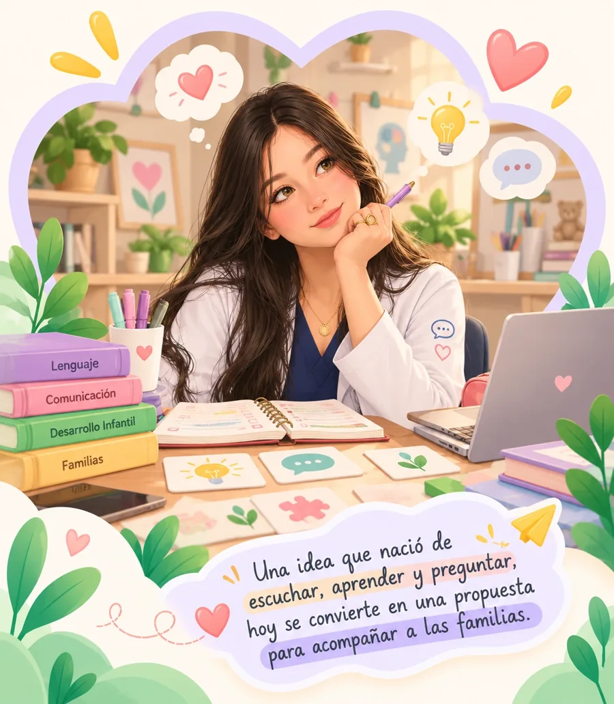

Pequeños momentos que hacen crecer la comunicación
Una idea que nació de escuchar y creció con el deseo de acompañar.

Nuestra historia
Sobre Crece en Casa
-
¡Hola! Soy Marielys Daniela Sierra, estudiante de Fonoaudiología y creadora de Crece en Casa, una propuesta que nació de una pregunta que me ha acompañado durante mi formación: ¿cómo podemos ayudar a las familias a seguir construyendo oportunidades de comunicación con sus pequeños, incluso cuando no están en terapia?
-
Durante mi formación, distintas experiencias despertaron en mí el interés por encontrar nuevas formas de acercar a las familias al desarrollo comunicativo de sus pequeños. Comprendí que, más allá de las sesiones terapéuticas, existen oportunidades cotidianas para acompañar este proceso y que contar con orientaciones prácticas puede marcar una diferencia en la manera en que las familias participan en él.
-

Esa inquietud se quedó conmigo. Más adelante, mi experiencia de práctica me permitió retomar esa necesidad y pensar en una manera de responder a ella: una propuesta que acercara la orientación fonoaudiológica a la vida cotidiana de las familias.
-
Así nació Crece en Casa, una plataforma con estrategias de comunicación y lenguaje, actividades lúdicas y recursos prácticos para acompañar a niños de 2 a 5 años desde el hogar.
-

Hoy, Crece en Casa representa mucho más que una idea: es mi manera de transformar una realidad que conocí durante mi formación en una propuesta que busca acompañar a otras familias. Porque detrás de cada actividad hay una oportunidad para compartir, detrás de cada juego puede surgir una palabra y detrás de cada pequeño momento puede crecer una forma de comunicarnos.